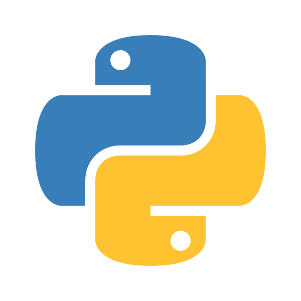
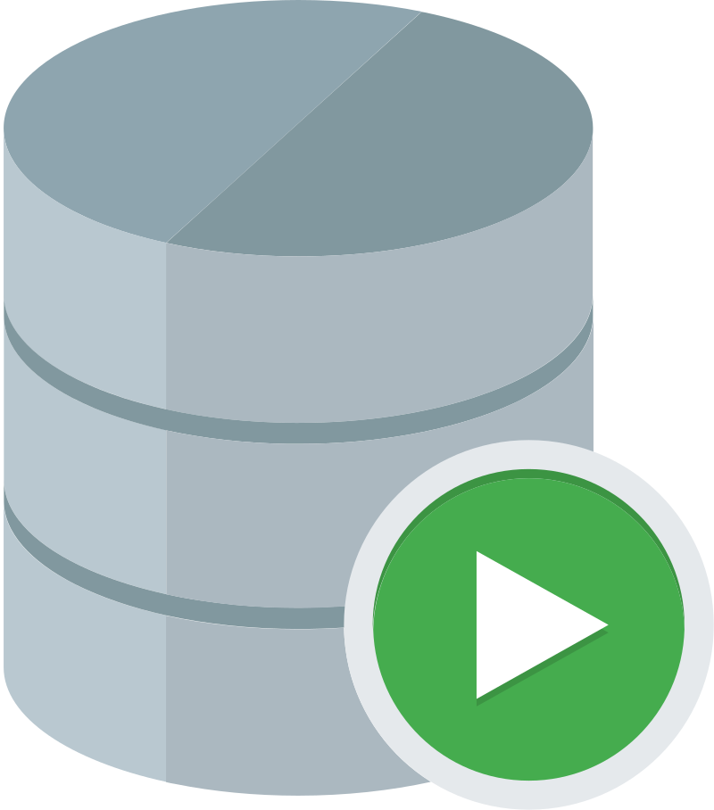

RESUMEN
Z_EXCHANGE es una plataforma educativa en línea dedicada a la enseñanza de la programación y el desarrollo de software. Fundada en 2022, Z_EXCHANGE se ha convertido en un recurso esencial para aspirantes a programadores y desarrolladores experimentados que buscan mejorar sus habilidades y mantenerse al día con las últimas tecnologías.
Nuestra misión es proporcionar una educación accesible y de alta calidad en programación, permitiendo a los estudiantes de todo el mundo adquirir las habilidades necesarias para tener éxito en la industria tecnológica. Creemos en el aprendizaje práctico y en la importancia de una comunidad de apoyo.
Nuestra visión es ser la plataforma educativa en línea más confiable y respetada para el aprendizaje de la programación, facilitando el acceso a la educación de calidad y promoviendo el crecimiento profesional continuo.
¿QUÉ ES LA PROGRAMACIÓN?
La programación es el proceso de diseñar y construir un conjunto de instrucciones que una computadora puede seguir para realizar tareas específicas. Estas instrucciones están escritas en un lenguaje de programación, que es un lenguaje comprensible tanto para los humanos como para las máquinas.

LENGUAJES DE PROGRAMACIÓN
Como introducción, una breve descripción sobre algunos de los lenguajes de programación que existen.Java

-
Java es un lenguaje de programación de propósito general, concurrente, orientado a objetos y basado en clases. Fue diseñado para tener la menor cantidad de dependencias de implementación posible, lo que permite que las aplicaciones escritas en Java puedan ejecutarse en cualquier plataforma que soporte Java sin necesidad de recompilación. Es ampliamente utilizado en aplicaciones empresariales, desarrollo web, aplicaciones móviles (especialmente Android) y sistemas embebidos.
C

-
C es un lenguaje de programación de propósito general que ha influido en muchos otros lenguajes de programación. Es conocido por su eficiencia y control de bajo nivel, lo que lo hace ideal para sistemas operativos, controladores y aplicaciones de alto rendimiento.
- C++: Una extensión de C que incluye características de programación orientada a objetos. Es utilizado en desarrollo de software de sistemas, aplicaciones de alto rendimiento, videojuegos y más.
- C#: Un lenguaje de programación desarrollado por Microsoft que combina los principios de C y C++. Es utilizado principalmente en el desarrollo de aplicaciones para la plataforma .NET, incluyendo aplicaciones web, de escritorio y móviles.
JavaScript

-
JavaScript Es un lenguaje de programación interpretado, de alto nivel y dinámico. Es uno de los lenguajes centrales de la web, junto con HTML y CSS. JavaScript se utiliza principalmente para crear contenido interactivo en sitios web, como formularios dinámicos, animaciones y juegos. También se puede utilizar en el lado del servidor con tecnologías como Node.js.
Ruby
-
Ruby es un lenguaje de programación dinámico, de propósito general y orientado a objetos. Es conocido por su sintaxis sencilla y elegante, que permite a los desarrolladores escribir código limpio y legible. Ruby es especialmente popular en el desarrollo web gracias al framework Ruby on Rails, que facilita la creación de aplicaciones web robustas y escalables.
Python
-

-
Python es un lenguaje de programación interpretado, de alto nivel y de propósito general. Es conocido por su sintaxis clara y legible, lo que lo hace ideal para principiantes y para el desarrollo rápido de aplicaciones. Python se utiliza en una amplia variedad de campos, incluyendo desarrollo web, ciencia de datos, inteligencia artificial, automatización de tareas y más.
PHP

-
PHP (Hypertext Preprocessor) es un lenguaje de programación de propósito general, especialmente adecuado para el desarrollo web. Fue creado en 1994 por Rasmus Lerdorf y ha evolucionado significativamente desde entonces.
Lo que distingue a PHP de algo del lado del cliente como Javascript es que el código es ejecutado en el servidor, generando HTML y enviándolo al cliente. El cliente recibirá el resultado de ejecutar el script, aunque no se sabrá el código subyacente que era. El servidor web puede ser configurado incluso para que procese todos los ficheros HTML con PHP, por lo que no hay manera de que los usuarios puedan saber qué se tiene debajo de la manga.
SQL
-

-
SQL (por sus siglas en inglés Structured Query Language; en español lenguaje de consulta estructurada) es un lenguaje específico de dominio, diseñado para administrar, y recuperar información de sistemas de gestión de bases de datos relacionales.2 Una de sus principales características es el manejo del álgebra y el cálculo relacional para efectuar consultas con el fin de recuperar, de forma sencilla, información de bases de datos, así como realizar cambios en ellas.